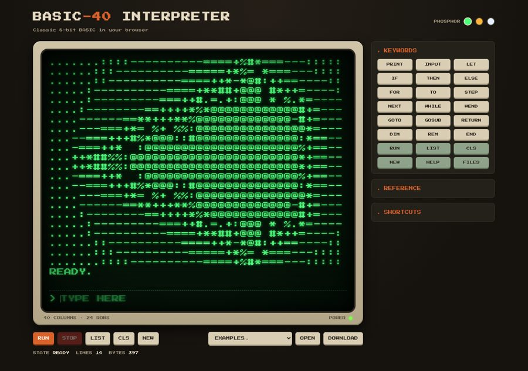
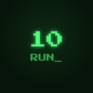
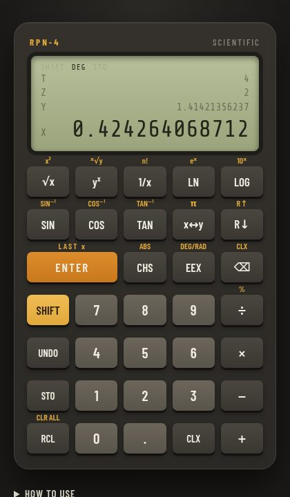
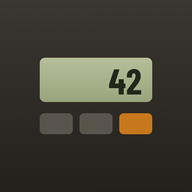
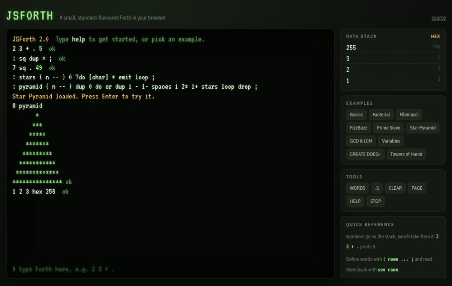
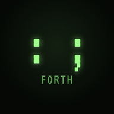
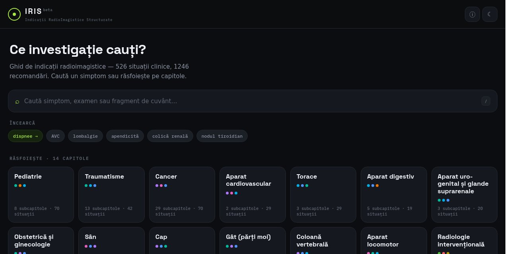

 BASIC-40 An 8-bit style BASIC interpreter with a 40×24 CRT screen and green, amber or white phosphor. FOR, WHILE, GOSUB, DATA, string functions and arrays Colour, PLOT/DRAW/CIRCLE graphics and SOUND DEF FN, INKEY$, RENUM/AUTO, sharing by link Open Source
 RPN-4 Scientific An HP-style Reverse Polish Notation calculator with stack lift that behaves like the real thing. Four-level stack, LAST x, x↔y, roll Trig, logs, powers, n!, STO/RCL 0–9 FIX/SCI/ENG, HEX/BIN logic, statistics Keystroke programs and a paper tape Open Source
 JSForth A small, mostly standard Forth with compiled words, a return stack and a live view of the data stack. IF/ELSE, DO/LOOP, BEGIN/WHILE, recursion VARIABLE, VALUE, CREATE … DOES> Floats, KEY/ACCEPT, MS, CASE, POSTPONE Open Source
 IRIS beta A searchable guide to radiology imaging indications, in Romanian, built from the GIRI guideline. 526 clinical situations, 1,246 recommendations Search by symptom, exam or word fragment, with synonyms Browse by chapter, save favourites, works offline Open Source